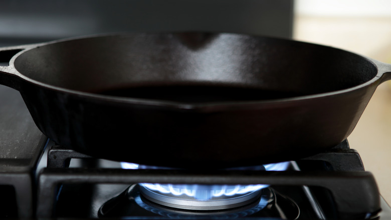
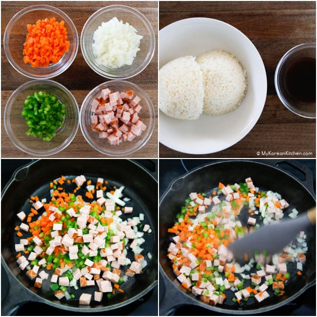
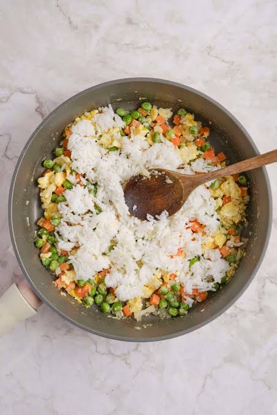
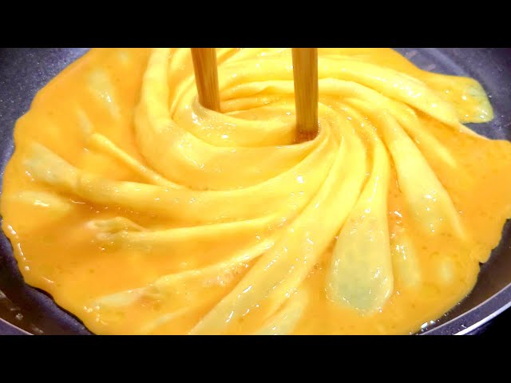
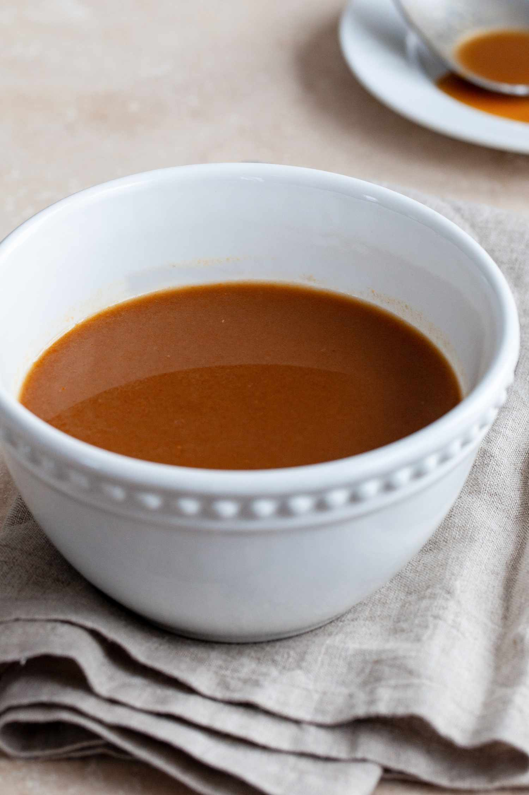
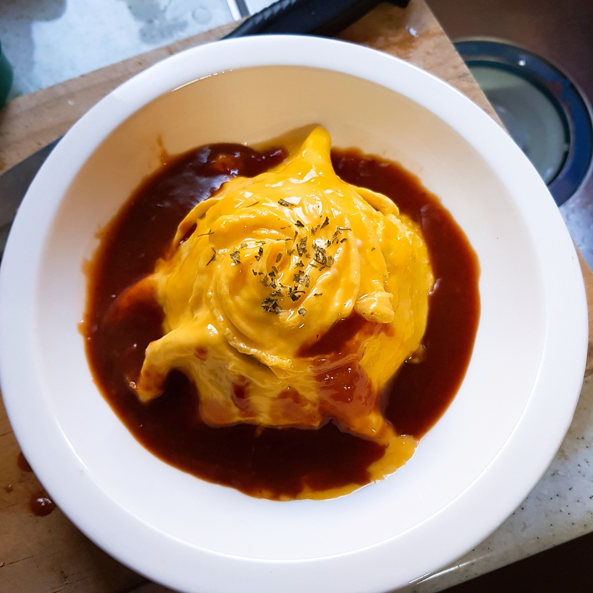

Ingredients
Fried Rice
Omelette
Tips
- Make sure to preheat your pan and coat with oil properly to ensure your ingredients don't stick to the pan.
- Sieve your eggs for a smoother texture and easier time twirling in the pan.
- An easier way to tell when your eggs are ready is to watch for air pockets or bubbles forming in the pan.
- Be careful not to overcook your eggs - it may cause it to break!
- Cover your rice after cooking to keep it warm!
- You can shape your rice with a bowl to place your omelette easily over it.
- Ketchup, tonkatsu sauce, or curry are also good alternatives for the demiglace sauce!
Preparation
Fried Rice
- Preheat your pan with cooking oil.
- Add in the carrots, onions, bell peppers, and ham until cooked.
- Mix the ketchup, worcestshire sauce, soy sauce, and rice wine.
- Add the rice and the seasoning from step 3 to the pan, and mix for 1 ~ 2 minutes.




Omelette
- Beat the eggs into a bowl and add a pinch of salt.
- Preheat your pan over medium high heat, and add cooking oil.
- Pour the eggs into the pan and cook until the edges are cooked.
- Using chopsticks or a similar set of utensils, gently push and twist the eggs from the outside inwards to create a "tornado." Make sure to maintain the shape as the omelette cooks.
- Place the omelette over your fried rice.
- Drizzle your chosen sauce on top, and serve hot!


